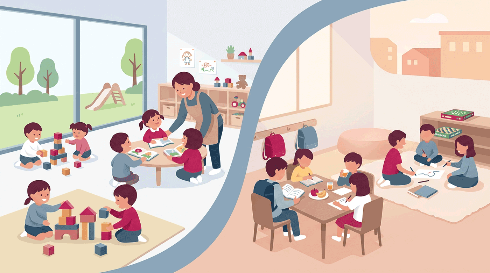

保育・学童の需給（子は減るのに足りない）
待機児童は8年連続ゼロ。だが特定園のみ希望の『隠れ待機』578人や一時預かり716人があり、共働き増で子どもは減っても保育需要はむしろ増える。放課後の学童も昼食提供など拡充が課題。

背景
札幌市は認可保育所等の待機児童ゼロを続けているが、実態は『特定の園だけを希望して入所していない』児童や、幼稚園・企業主導型の一時預かりで対応している児童が一定数いる。少子化で未就学児は減る一方、共働き世帯の増加で保育の利用希望は増え続けており、『子は減るのに保育は足りない』という需給のねじれが生じている。放課後の学童（放課後児童クラブ）も、児童会館・ミニ児童会館を中心に、長期休みの昼食提供の試行など、質と量の両面で拡充が求められている。
主要データ
| 公式の待機児童 | 8年連続ゼロ（令和6年4月1日時点） |
|---|---|
| 隠れ待機など | 特定園のみ希望で未入所 578人／幼稚園・企業主導型の一時預かり利用 716人 |
| 需要の傾向 | 未就学児は減少するも、共働き増で保育利用希望は増加 |
| 学童 | 児童会館・ミニ児童会館で放課後児童クラブを運営。長期休みの昼食提供を試行 |
事実
- 札幌市は認可保育所等の待機児童ゼロを8年連続で維持している（令和6年4月1日時点）。
- 一方で、特定の園だけを希望して入所していない児童が578人、幼稚園や企業主導型保育の一時預かりで対応している児童が716人おり、『隠れ待機』が存在する。
- 少子化で未就学児は減っているが、共働き世帯の増加で保育サービスの利用希望はむしろ増えている。
- 放課後の学童（放課後児童クラブ）は児童会館・ミニ児童会館で運営され、長期休業中の昼食提供の試行など、負担軽減の取組が始まっている。
解釈
『待機児童ゼロ』は成果だが、指標の外に隠れたニーズがある。数の充足だけでなく、希望する園・地域・時間帯に預けられるかという『質と配置』の問題に論点が移っている。少子化で将来は定員に余裕が出る地域も現れ、統廃合や定員調整とセットで、保育・学童・幼稚園を含めた就学前〜放課後の受け皿を面で設計する必要がある。
提案
- 『隠れ待機』を含む実需を地域別に把握し、園の配置・定員を機動的に調整する。
- 学童の量（受入枠）と質（昼食・生活の場としての機能）を一体で拡充する。
- 少子化で余裕が出る地域は、保育・学童・小学校の複合化で施設と人を効率的に使う。
深掘り — 市民の声と答え
『待機児童ゼロ』なのに、預けにくいと感じるのはなぜ？
公式の待機児童は『認可施設に申し込んで入れなかった人』を指しますが、そこから外れるケースがあります。札幌では、特定の園だけを希望して入所を見送っている児童が578人、幼稚園や企業主導型の一時預かりで対応している児童が716人います（令和6年4月時点）。つまり『どこかには空きがあるが、希望する園・地域・時間帯には入れない』という状態が、ゼロという数字の裏に隠れています。少子化で子どもは減っても、共働きの増加で利用希望は増えており、数の充足と体感のズレが生じています。
検討体制・メンバー
札幌市子ども未来局が保育・学童を所管。各区の保育コンシェルジュ、園・児童会館の運営主体と連携する。
AIノート
AIの貢献度は中。地域別・時間帯別の保育/学童の需給ギャップを推計し、『隠れ待機』を含む実需の可視化や、園配置の最適化シミュレーションに役立つ。